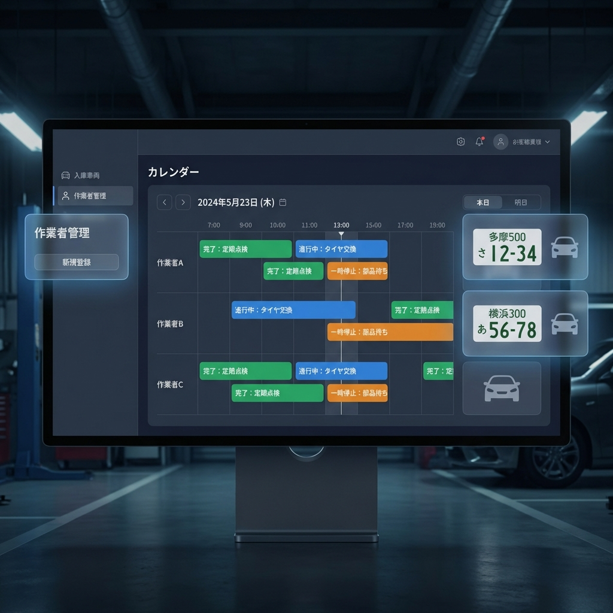

汎用業務支援システム
解体業・自動車整備業向けの次世代業務管理システム。
作業の可視化と効率化を実現します。

複数の作業者のスケジュールを一目で把握。タイムライン形式で作業の進捗をリアルタイムに確認できます。
ナンバープレート、メーカー、車名、型式などの詳細情報を簡単に登録・検索。車両情報を一元管理できます。
作業の割り当てから完了まで、ステータスを色分けして視覚的に管理。未着手・作業中・完了を一目で判別できます。
Web Speech APIを活用した音声コマンド入力。手を使わずに作業開始・完了・メモ追加が可能です。
既存の車両データをCSVファイルから一括登録。日本語・英語カラム名の両方に対応しています。
作業者ごとにログイン管理。グループ化された作業者一覧から適切な権限で安全に運用できます。
タブレット・スマートフォンでも快適に操作可能。現場での作業記録もスムーズに行えます。
日次の台数、作業予定、完了数をダッシュボードで表示。業務の進捗を数値で把握できます。
セットアップスクリプトをダウンロードして実行するだけで、自動的にプロジェクトのクローン、依存関係のインストール、開発サーバーの起動、ブラウザの立ち上げまで完了します。
setup.zip をダウンロードsetup.bat をダブルクリック※ 初回実行時にNode.jsのインストールが必要です（nodejs.org）
プロジェクトをローカルにダウンロードします。
git clone https://github.com/okazakiyoshio0823/ORBUYOS.git
cd orbiyos必要なパッケージをインストールします。
npm installローカル環境で動作確認します。
npm run devhttp://localhost:3000 にアクセスして、ログイン画面から作業者を選択してログインします。
同じWi-Fiネットワーク内のデバイスからアクセスできます。
# PCのIPアドレスを確認
ipconfig
# タブレットのブラウザで以下にアクセス
http://[PCのIPアドレス]:3000